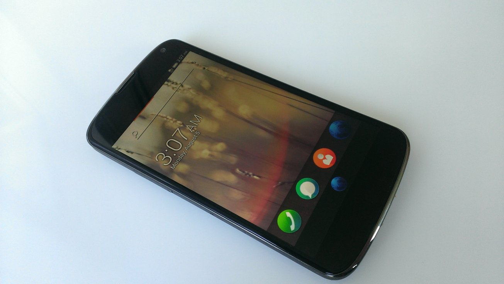
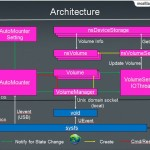

9月302013 Ben 藍牙四大神器！– 簡介開發常用藍牙配件 （圖片來源：http://www.flickr.com/photos/intelfreepress/8401881183/） 身為一個完全沒碰過藍牙的新手，在加入 Firefox OS 藍牙團隊開始開發後，接觸到的一切都令我感到新奇有趣：包括藍牙的軟體架構及傳輸概念、各種不同用途的 Profiles...
9月232013 viral 超簡單！三步驟 build 好 Firefox OS！  Firefox OS 的誕生早就不是新聞，但是你也許不知道 Firefox OS 早就貼心提供了平易近人的 build code 環境，以免各位在一開始徬徨無助的時候，就被奇怪的 build failed 給嚇跑了。 沒錯只要跟著下面的三個步驟，就可以 build 好 Firefox OS 的 im...
9月162013 Marco SD Card 自動掛載/分享機制  在一些低階的手機中，由於內部多使用僅 512 MB 的 Nand Flash 當作儲存空間，因此無法切割出一塊專門供使用者存放檔案的空間，這時就需要仰賴外部儲存的支援，也就是外接 SD Card。一但有了這項支援，OS 就必需提供一個機制用來偵測並自動掛載插入的外部儲存裝置。另一方面，為了方便使用者...
9月92013 ypwalter 網頁自動測試的好朋友 – WebElement Locators MeettheFirefoxOSMascotaFoxThatsonFire 二十餘年前，網站慢慢開始出現在世界各地，起初就像盤古開天闢地一般，沒有複雜的東西，網站都相當簡易，大多以文字和些許的圖片構成，連頁面也沒有太多。經過好一陣子的發展，慢慢有了比較複雜的結構，那時候人寫網頁的邏輯慢慢的會受到干擾...
9月22013 小雪 先別說 Flash 了，你聽過 SVG 嗎？ Scalable Vector Graphics (SVG)，可縮放向量圖形，是一種 XML 標記語言，用來描述二維向量圖形。SVG 對一般使用者而言， 也許是個相對陌生的名詞，但是我相信大家一定聽過 Adobe Flash，SVG 跟 Flash 一樣，其特點都是使用向量圖形，與事件觸發高度整合，...